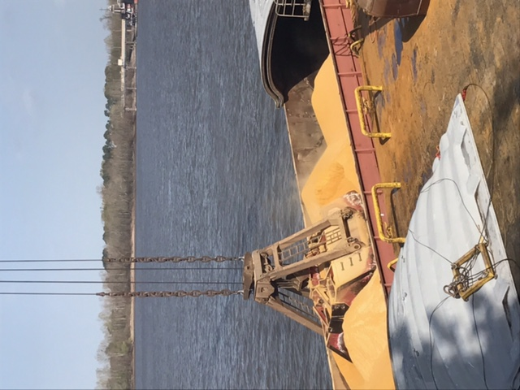
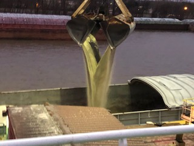

| Bulk Vessel Loading Supervision | Vessel Condition Inspections | Bulk Vessel Discharge Supervision |
| Rail Car Inspection | Commercial Inspections | Container Inspections |
| Sampling | Poultry | VOC |
| Barge Inspections | Reporting | Logistics |
| Cargo condition surveys | Molasses loading and discharge | Barge damage surveys |



